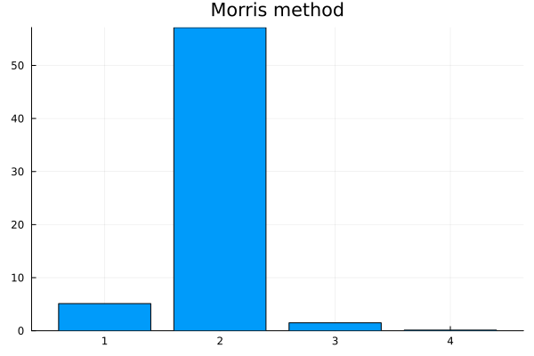

Global Sensitivity Analysis
This tutorial describes methods of Global Sensitivity Analysis (GSA) by using HetaSimulator together with GlobalSensitivity package. The content is based on GlobalSensitivity tutorial. Current version of the tutorial is based on HetaSimulator v0.7.0 and GlobalSensitivity v2.7.0
In order to run GSA we need to install GlobalSensitivity package in addition to HetaSimulator and Plots. We will also use QuasiMonteCarlo package for sampling.
julia> ]
(gsa) pkg> add GlobalSensitivity QuasiMonteCarloWorking example
All GSA methods are illustrated by one-compartment Ethanol PK Model. Download the following files to your working directory:
wget https://raw.githubusercontent.com/insysbio/alco/main/src/index.heta
wget https://raw.githubusercontent.com/insysbio/alco/main/src/mod1.heta
wget https://raw.githubusercontent.com/insysbio/alco/main/src/mod2.heta
wget https://raw.githubusercontent.com/insysbio/alco/main/src/mod3.heta
wget https://raw.githubusercontent.com/insysbio/alco/main/src/qsp-units.heta
wget https://raw.githubusercontent.com/insysbio/alco/main/data-mumenthaler-2000/scenarios.csvLoad the platform into the Julia environment. You should provide the path to the index.heta file as the first argument to load_platform. We will use the same working directory where the index.heta file is located.
using HetaSimulator, GlobalSensitivity, Plots
p = load_platform(".")
scen = read_scenarios("scenarios.csv")
add_scenarios!(p, scen)According to Model1 scenario we will study the sensitivity of BrAC observable (breath alcohol concentration) to four parameters (:k_a, :Vd, :Vmax, :Km).
scn1 = scenarios(p)[:scn1]
s = sim(scn1)
plot(s, vars=[:BrAC])To run GSA we need to define a function which takes in parameter values and outputs an observable. The observable can be any function of timeseries (e.g. mean, maximum, minimum, AUC, value at a certain timepoint). We can also define vector output to study sensitivity of different observables or an observed variable at different timepoints.
Let's have a look at some examples of such functions.
pnames = [:k_a, :Vd, :Vmax, :Km]
nump = length(pnames)
# Concentration value at t=8 hours
function C8hours_func(params)
sol = sim(scn1; parameters= pnames .=> params)
return sol(8.0,:BrAC)
end
# Concentration values at two timepoints t=4,8 hours
function C8hours_func(params)
sol = sim(scn1; parameters= pnames .=> params)
return sol.([4.0, 8.0],:BrAC)
endIn this tutorial we will observe maximum alcohol concentration in the compartment.
function Cmax_func(params)
sol = sim(scn1; parameters= pnames .=> params)
brac = sol.(times(sol),:BrAC)
return maximum(brac)
endNow we define parameters bounds based mean/sd values reported in the original paper Ethanol Pharmacokinetics in White Women. Parameters bound imply Uniform distribution. Usage of other distributions (Normal, LogNormal, etc) for parameters sampling will be demonstrated later in the tutorial.
bounds = [[0.01, 0.5], [0.01, 1.], [0.01, 0.5], [0.01, 5.0]]GSA Methods
Regression/Correlation coefficients method
The least computationally demanding method to estimate global sensitivities is to compute correlation/regression coefficients. This method is based on the assumption, that the output can be approximated by a linear model of parameters (e.g. BrACmax = a1*k_a + a2∗Vd + a3∗Vmax + a4∗Km). This assumption is reasonable if the output is monotonic in each of the input parameters, otherwise the reported coefficients can be missleading.
The number of samples required by the method should be larger than 2^P (where P is the number of input parameters). 2^P is the bare minimum and a reasonable number of samples for a model of four-five parameters is 1000-5000.
Usually Standard Regression Coefficients (SRC) and Partial Correlation Coefficients (PCC) are considered.
nsamples = 1000
reg_sens = GlobalSensitivity.gsa(Cmax_func, RegressionGSA(true), bounds, samples = nsamples)
p = plot(layout=(2,1), size=(400,600))
heatmap!(p[1],
reg_sens.partial_correlation, fc =cgrad([:blue, :orange]),
yticks=false, xticks = (1:nump, String.(pnames)),
title = "Partial correlation")
heatmap!(p[2],
reg_sens.standard_regression,fc =cgrad([:blue, :orange]),
yticks=false, xticks = (1:nump, String.(pnames)),
title = "Standard correlation")
p
(Note!) Regression-based GSA can also be applied to the results of multiple simulations provided to gsa() function as Matrices. See GlobalSensitivity docs. This allows us generate parameters in advance from pre-defined Distributions.
# Matrix of input parameters
X = zeros(length(pnames), nsamples)
X[1,:] .= rand(LogNormal(-3.08, 0.77), nsamples) # k_a
X[2,:] .= rand(Uniform(0.01, 1.), nsamples) # Vd
X[3,:] .= rand(Uniform(0.01, 0.5), nsamples) # Vmax
X[4,:] .= rand(LogNormal(0.46, 0.49), nsamples) # Km
# output max concentration values
Y = [Cmax_func(X[:, i]) for i in 1:size(X,2)]'
reg_sens = GlobalSensitivity.gsa(X, Y, RegressionGSA(true))Sobol (and eFAST) method
Sobol method is the GSA method of variance decomposition based on mathematical result by I.M. Sobol. Variance of the output is decomposed into contributions from each parameter and their interactions. Two indices are used to measure these contributions. The contribution of each parameter is represented by first-order index and the contribution of the parameter together with all its interactions with other parameters is represented by total-order index.
The requirement for the number of samples is the same as for Correlatin/Regression coefficients method: The number of samples required by the method should be larger than 2^P (where P is the number of input parameters).
nsamples = 1000
sobol_sens1 = GlobalSensitivity.gsa(Cmax_func, Sobol(), bounds, samples = nsamples)
p = plot(layout=(2,1), size=(400,600), xticks = (1:nump, String.(pnames)))
bar!(p[1], 1:nump, sobol_sens1.S1, title = "Sobol First order indeces", label=false)
bar!(p[2], 1:nump, sobol_sens1.ST, title = "Sobol Total order indeces", label=false)
p
(Note 1 !) It is recommended to use low-discrepancy sequence instead of a pure Monte-Carlo to effectively sample the search space . One can choose SobolSample(), LatinHypercubeSample(), HaltonSample() or other quasi-Monte Carlo samplers from QuasiMonteCarlo package.
using QuasiMonteCarlo
lb = [b[1] for b in bounds]
ub = [b[2] for b in bounds]
sampler = SobolSample()
A,B = QuasiMonteCarlo.generate_design_matrices(nsamples,lb,ub,sampler)
sobol_sens2 = GlobalSensitivity.gsa(Cmax_func, Sobol(), A, B)(Note 2 !) To ensure the convergence of Sobol indices and choose reasonable sample size it is useful to set different sample sizes and monitor (plot) how the indices' values stabilize with the increase of sample size.
(Note 3 !) As of GlobalSensitivity@v2.7.0 Sobol() implementation supports Uniform input ranges and not parameters' distributions. If you prefer to input parameters' distributions you can choose eFAST(), which is based on Sobol() method. Please refer to the eFAST docs for detailed example.
Morris method (Elementary effects method)
Morris method estimates parameters' contribution to the output be computing individual "elementary effects" (EE), which are local sensitivities at different points in the parameters space. The method runs multiple trajectories through the grid of points in parameter space, computes EEs and outputs mean and std of EE per parameter. The sensitivities are calculated per parameter, so the method doesn't take into account interactions between parameters. Morris method doesn't have a strong mathematical foundation (as Sobol method). Due to its simplicity, it is commonly used as a pre-scan method with all the input parameters of interest. Parameters identified as noninfluential can be then fixed to run computationally demanding but more reliable variance-based methods (Sobol(), eFAST())
The requirement for the number of samples is the same as for Correlatin/Regression coefficients method: The number of samples required by the method should be larger than 2^P (where P is the number of input parameters).
The number of estimated points in the parameter space is controlled by total_num_trajectory and num_trajectory arguments. See Morris method docs for details.
morris_sens = GlobalSensitivity.gsa(Cmax_func, Morris(total_num_trajectory=5000,num_trajectory=600), bounds)
bar(1:nump, morris_sens.means_star[1,:], title = "Morris method", label=false)
(Note 1 !) Morris method also outputs std of EE per parameter: morris_sens.variances. High std reported by Morris method can be a marker of parameters interaction or high nonlinearity between the parameters and the output.
(Note 2 !) As in Sobol() method it useful to set different number of trajectories and monitor how the mean values stabilize with the increase of sample size.
(Note 3 !) As of GlobalSensitivity@v2.7.0 Morris() implementation doesn't support generate_design_matrices interface (see Sobol method notes), so only default sampling scheme (Monte-Carlo) can be used.
Parallel setup
It is natural to speed-up GSA methods (e.g. Sobol method) by running simulations in parallel. To do so we need to rewrite Cmax_func and use batch keyword argument in the gsa() function.
function Cmax_batch_func(params_batch)
batch_size = size(params_batch,2)
sol = mc(scn1, pnames .=> [params_batch[i,:] for i in eachindex(pnames)], batch_size; parallel_type=EnsembleDistributed())
out = zeros(batch_size)
for i in eachindex(out)
brac = sol[i].(times(sol[i]),:BrAC)
out[i] = maximum(brac)
end
return out
end
sobol_sens = GlobalSensitivity.gsa(Cmax_batch_func, Sobol(), A, B, batch=true)